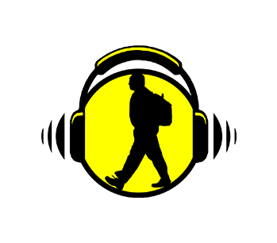

Start
Hvordan?
Innstillinger
Trykk pilen for å begynne turen!
map
info
distance
Your browser does not support the audio element.
Your browser does not support the audio element.
Your browser does not support the audio element.
Your browser does not support the audio element.
Your browser does not support the audio element.
Your browser does not support the audio element.